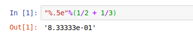

Lab 1: Functions And Getting Started with Sage
(Click here for the Maple version)
By Chris Tralie
Table of Contents
Getting Started with Sage
Sage is a technical computing and documentation software package for mathematics based on the Python programming language. You will use Sage use to explore some of the concepts we learn in calculus in groups of two.
Installing Sage
To install Sage on your local machine, please click here and download and install the appropriate binaries based on your machine. Here are a few more notes per system- Mac Users:
When choosing between Intel and PowerPC in the download menu, you will most likely want Intel. Also be sure to download the .app.dmg file and not just the .dmg file. When you are finished installing and go to open the program, it will ask you what directory you would like to be your "notebook directory." This is where you will be saving your labs (by default is is Documents).
-
Windows Users:
Once you download and install the appropriate .exe file, you will likely get three different options for running sage. You want to launch
Sage Notebookfor this class. -
Linux Users:
If you're using Linux, you probably already know what to do :). Since Sage is Python-based, if you already have Python, it's relatively straightforward to get setup. Since I use the Anaconda Python distribution on my machine, my preferred way of getting Sage setup is to use the conda-forge distribution after installing. Then, you can run
jupyter notebook
from the console, and it will launch a Python notebook server, from which you can launch a Sage notebook, as described below.
Opening A Notebook
Once Sage has been downloaded, open up Sage notebook (as described above for Windows, Mac, or Linux). This will launch a local web server, from which you can create Sage notebooks to hold all of your computations. To create a new notebook, go to New -> SageMath X.X, as shown below:
Lab Report Format
Rather than using Microsoft Word or some other text editor, you will actually be writing your lab reports inside of a Sage notebook itself. Sage notebooks have both a Code Mode and a Markdown Mode, which can be used for mathematical computations and text, respectively. To insert a new cell, go to the Insert menu at the top of the notebook. To change the type of a cell, select the type from the menu at the top of the notebook, as shown below
Once you have finished editing the markdown or code, click Run to display the result. The image below shows an example of 4 cells, the first which is markdown, the second which is code, the third which is markdown again, and the fourth which is code. Note that markdown is fairly straightforward, but you have to do some mild formatting to get different text sizes. See, for instance, this Markdown cheat sheet, which is way beyond what we need, but which is good to study for other tasks beyond the course. As an example, the top cell looks like this before you click "run"
## Part 1 Example: Parabolas
This is some text written in Markdown Mode. First, let's make sure that 1+1 = 2
Other Tips
-
Save your Sage notebook periodically just as you would while working with any document (this should be done automatically from time to time, but it's a good habit to get into). The files created by Sage will have an
.ipynbextension. If you want to return to a particular.ipynbfile navigate to it in Sage notebook, and open it. -
You should familiarize yourself with the extensive help that is available through Sage. Click here to view tutorials and FAQ on sagemath.org. The labs will be designed to walk you step by step but you may need to troubleshoot at times, so use the resource!. One quick way to get help is to type
command?in a code cell, which will return the help section for that command. For instance, typesolve?in a cell. Sage will return the help pages relating to thesolvecommand. - Please be sure to spell check your document.
What To Hand In / General Guidelines
-
When you are finished all of the steps in the lab and you have written up answers to the associated questions, you should turn in your
.ipynbSage notebook that you saved. Each group will submit exactly one.ipynbfile via Canvas. The title of your electronic version should include both lab partner names & Lab # for ex., “Taylor Swift and Ella O’Connor Lab #1”. - You should Answer all questions with complete sentences in Sage. Clearly identify each question. You will use the markdown and code modes, as described above, to create a readable document with grammatically correct language. It is essential to communicate effectively using the appropriate mathematical language.
- Label all graphs, axes, and explain your plots!
- Add any additional observations and comments that you may have.
- Please make sure that your report is readable to a person not literate in Mathematics. Someday you will be working in industry or academia, and you will need to effectively communicate your findings to your peers.
Part 1: The Basics of Sage Features And Syntax
The purpose of the first part of the assignment is simply to get you familiar with the basics of Sage, so just follow the directions and execute the commands in different notebook cells. Your final .ipynb file should show that you have successfully run all of the commands.
1. Basic Arithmetic And Keyboarding
When you launch a Sage notebook, you start with a blank document with menus and toolbars at the top. Explore each of the menus by expanding them. The document will start you off with a blank cell in code mode. At the cursor, you can start typing a math statement. Click theRun button at the top of the notebook, or press Shift Enter to see the result. Be sure you are in code mode and not markdown mode. For example, you should do the following for this lab:
- Type in
3+2 Shift Enter - The result is returned on the next line with a label
Out[1]that increments with each command.
2. Entering Basic Numerical Expressions
-
Fractions:
Sage calculates exact answers by, so fractions remain as fractions throughout all calculations to reduce approximation errors in multi-step problems. On a new line, enter
Then press1/2 + 1/3Shift Enteror theRunbutton for the result of5/6. -
Approximate Numerical Representations:
It is possible to output numerical approximations of exact expressions in Sage. For instance, if you instead type
numerical_approx(1/2 + 1/3, digits=50)
You should get the following output:
You can change the number of digits by making thedigitsparameter something different.A shorthand for this is actually
N(1/2 + 1/3), so if you want to use this shorthand, be careful not to redefineNanywhere in your code! We will be using this shorthand for the rest of the lab whenever we want a numerical value of something.NOTE: If you are ever unsure whether you have a numerical value or an exact expression, simply use the
typecommand. For instance,type(1/2 + 1/3)will return<class 'sage.rings.rational.Rational'>(a type which actually stores the numerator and denominator of a rational number exactly), whiletype(N(1/2 + 1/3))will return<class 'sage.rings.real_mpfr.RealNumber'>(a real number decimal approximation to the rational number). -
Numeric Formatting Options:
If your problem already uses decimals, then Sage keeps to the same format. However, you can apply different formatting to numeric results by using Python string formatting conventions. For those curious, click here to read more about this. This is an advanced feature that we will not normally need for this class, but for completeness, typing
"%.5e"%(1/2 + 1/3)will output the decimal to 5 places and display the result in scientific notation:
 -
Exponent Symbols and Square roots:
In Sage, there are two ways to take square roots. The first is to raise an expression to the
1/2power with the^symbol for exponents. For example, type25 ^ (1 / 2)in a code cell and run it. You should have an output of5. Alternatively, for square roots in particular, you can use thesqrt()command. For example, type insqrt(25)and run it. You should get an output of5here as well.
NOTE: It is also possible to write25**0.5for a square root, or a**b for a general ab exponent, instead of using the carat ^. This is the more "pythonic" way of doing things, but the carat is more similar to what other mathematical languages use, and though ^ doesn't work in Python, it works in Sage. -
Multiplication:
Multiplication in Sage is done using the
*symbol. For example, type in3*2and execute. You should receive and output of6. You should always use*to multiply things together, including functions, numbers, constants, and general expressions, to avoid confusion. It is a very common error to omit this symbol.
3. Numerical Expressions with Special Symbols
In addition to fractions, special symbols such as e and π remain as such throughout all calculations, unless you redefine them (which is not recommended!).
- The constant "pi"
Type in
5/6 + piand run the cell. You should have an output ofpi + 5/6, which is equivalent to the expression \[ \frac{5}{6} + \pi \] It is important to use both lower case letters pi here, since Sage will not understand "Pi" or "PI" or "pI". As before, typing inN(5/6 + pi)and executing will give you a decimal approximation of 5/6 + π. - The constant "e"
By default, the letter
eis defined to be the special number e in Sage. Just as with "pi" expressions involving "e" will keep "e" as an exact letter, unless you redefine it somewhere in your notebook (not usually recommended!). To see e out to 5 decimal places, type a cell withN(e, digits=5). Take note of this decimal value; it may come in handy later in this lab
4. Algebraic Expressions
- Expressions with variables:
In Sage, you may enter all sorts of expressions with variables having any name you choose. For example, type in the following code in a cell and execute:
y = var('y')
f = (x + 2*y)^3
You have now entered the expression \[(x+2y)^3\] and saved it in a variable named f. Type in f by itself in a cell and execute. Notice that Sage does not automatically expand these expressions for you! Now type in expand(f)and execute. Sage will now output the expression you gave it, but expanded. Note that this expanded expression is not saved to the variable
f. Sage will still think f is the non-expanded expression you gave it. You can save the expanded expression to a variable called g by typing g = expand(f)and executing. We may also factor expressions using the
factor command. Type in factor(g)and execute. We should now be back to where we started.
Oftentimes, we want to substitute numbers into our variables. In the above example, it is possible to simply write f(1, 2) to evaluate the expression at x=1 and y=2. To be safe, it is a better practice to specify the inputs to the function explicitly, so type in and execute f(x=1, y=2). You should have an output of 125.
NOTE: You should be careful when using the = sign in your code. The command f(x=1, y=2) only sets the x=1 and y=2 in the context of this expression (as "arguments" to the function f), but if we had instead typed in x=1 somewhere else in the code and executed, it would have set x to be 1 for the remainder of the notebook!. This is probably not a good idea, since we often want to use x as a variable in our expressions! If you make this mistake, you can set x to be back what it was by typing x = var('x'), much like we defined y above.
Type in show(plot(x^2-4)) and execute. Sage will display a graph of \[x^2-4\] and will pick a domain for you. We can change the domain if we wish to view a different part of the graph. Type in show(plot(x^2-4, 0, 15)) and execute. This will show you the graph from x=0 to x=15.
Let's now look at a slightly more complicated example. Input the code below into a cell:
p1 = plot(x^2-4, (x, 0, 15), ymin=-100, ymax=200, axes_labels=['x-axis','y-axis'], legend_label='f(x)')
h = var('h')
p2 = plot(200-h^2, (h, 0, 15), ymin=-100, ymax=200, color="red", legend_label='f(h)', linestyle='--')
show(p1 + p2)
x from 0 to 15, and we have also defined a variable h and also set its range to be from 0 to 15. Since the plot command is expecting x as the input variable to be varied, this line is necessary when the expression includes a variable that is not h. Take note also of the code that's used to change the range extents from -100 to 200 (they were set automatically before), and the code that comes up with axis labels and legend labels for the expressions. Finally, note how the show command was called separately from the two plots commands now, so we could write them on separate lines without clutter. For a full list of options for plotting (of which there are many), type plot? in a cell.
5. Entering Functions
- Functions:
One may also input functions into Sage. Recall that a function is a rule that takes a number as input and returns a number as output. Type in the following
h = lambda x: (x+1)^2 + 5h, which takes a number (or expression!) as input, adds 1 to it, squares it, adds 5 to it, and then returns that value. For example, typing in h(3) and executing will return 21. Typing in h(pi) and executing will return \[ (\pi+1)^2 + 5 \] Typing h(f) and executing will square the expression f we defined earlier and then add 5 to it! You should get
\[ ((x + 2y)^3 + 1)^2 + 5 \]
We can get the expression \[ x^2 + 5\] by simply typing h(x) and executing. We can also compose a function with itself very easily by typing h(h(x)), which you should also execute and check by hand to make sure it's correct.
NOTE: For those interested, the lambda keyword defines a so-called "anonymous function" in Python. Click here for more information. For the purposes of this course, though, we will usually just be defining single variable functions, so just refer to the above example.
NOTE ALSO: For more examples of how to define functions in Sage, click here. The examples here use the more standard syntax of def for defining functions in Python, but it is more verbose.
Sage will, by default, understand trigonometric functions and will expect their input to be in radians. For example, typing in N(cos(pi)) and executing will return an output of -1. Sage will also understand the natural logarithm function. For example, typing in N(ln(1)) and pressing Enter will return 0, and typing in N(ln(e)) will return 1. Show that you are able to do this in a cell.
We may graph functions in Sage by converting them into expressions. Type in h = lambda x: x^2 - 3 and execute. Now, to graph h(x) from x=0 to x=15, type show(plot(h(x), (x, 0, 15)))
and execute. This will give the desired graph.
6. Changing Previously Entered Code in A Sage Notebook
- Mathematics in a Sage document are live, so you can go back to make changes and re-execute the cells to obtain a new result. Sage's state at any point in time is the result of whatever cells you ran in the order that you ran them, regardless of where they appear in the document. This can be a bit confusing, not only because you can execute cells out of order, but because if you delete a cell that you've already run, Sage still retains all of the variables that you defined in that cell (unless you overwrite them later). If you get completely confused, you can re-run all of the cells you have in order by going to the
Kernel > Restart & Run Allmenu (but be careful, this will wipe all of the output and start from scratch!) -
Go back to the very first line where you entered
3 + 2and change the 2 to a 8. Then re-execute that cell to obtain a new result of 10 (your final submission for this lab should reflect these changes. No need to keep both the changes and the original). -
Go back to the cell where you defined
x2 - 4in the plot functions cell, and change thex2to10*x2. Then re-run the cell and the plot. Notice the updated graph and the automatically re-adjusted range (your final .ipynb submission should reflect these changes. No need to keep both the changes and the original)
Part 2: Algebraic Calculations
The second part is a continuation of the first part, with a focus on some additional algebraic tools that exist in Sage. As before, the .ipynb file should show that you have successfully run all of the commands.
1. Solving Equations Using Sage Commands
- Solving one equation in one variable:
Type in
solve(x^2-2,x)and execute. The output will be the two solutions to the equation \[ x^2-2=0 \] Thesolve()command takes two inputs here: the equation we wish to solve, and the variable we wish to solve for. Notice, as usual, Sage does NOT give us a decimal answer. For numerical approximations of the solutions, you can runsolutions = solve(x^2-2,x, solution_dict=True) for sol in solutions: print(N(sol[x], digits=5))This code pulls out each solution and prints the numerical approximation to 5 digits to the console. Note that the following code solves the same equation, but it is written using slightly different syntax
solve(x^2 == 2,x)But in this case, we're writing the equation \[ x^2 = 2 \] so this syntax is useful when we don't automatically want the equation to be equal to 0. Notice the == instead of a single =. It is a common mistake in Python and other programing languages to use a single = sign, which is an assignment operator, rather than the equality operator, with is two ==.
-
Solving systems of equations:
Type the following into a cell and execute
You should obtainy = var('y') solve([x^2*y^2==0, x-y==1], x, y)
[[x == 1, y == 0], [x == 0, y == -1]]
as output, which is the set of two solutions of this system. By using the square braces [ and ], we have given Maple a list of equations. We have told Maple that the equations we wish to simultaneously solve are \[ x^2y^2 = 0 \] and \[ x-y = 1 \]. Now run the following code:
This is the same as before, except incorporating they = var('y') solve([x^2*y^2==0, x-y==1, abs(x) > 0], x, y)abs(x) > 0inequality adds the additional constraint that \[ x \neq 0 \] This example shows how both the absolute value and inequalities are things one can mix into the constraints.
2. Factoring
We will use the simple version of the Sage factor command. The factor function computes the factorization of a polynomial by the calling sequence factor(a), where a is a polynomial. Type
factor(x^3 + y^3)
Press enter, and the traditional formula will be returned. Now factor the equation
\[ 6x^2 + 18x - 24 \]
You should obtain the result
\[ 6(x+4)(x-1) \]
3. Polynomial Long Division
Sometimes we want to divide a polynomial by another polynomial that isn't quite a factor, so there will be a remainder left over. We will now use Sage to perform polynomial long division, which will be useful in our next lab. First, type and execute the following code in a cell:
R.<l> = FunctionField(RR) ; R
S.<t> = RR[] ; S
This should output Univariate Polynomial Ring in t over Real Field with 53 bits of precision. You should take Math 335, abstract algebra, if you want to know what this all means! For now, just think of this as some code that sets up Sage to understand polynomials with coefficients and solutions in the real numbers. Now, create another cell and run the following code to divide \[ t^2 - 4t + 5 \] by \[ t+2 \]
P = t^2 - 4*t + 5
Q = t+2
quo, rem = P.quo_rem(Q)
print("quotient: ", quo)
print("remainder: ", rem)
This should output a quotient of \[ t-6 \] and a remainder of 17. As a sanity check to make sure this is correct, run the multiplication quo*Q + rem, and verify that you get t2 - 4t + 5 back. Now, plot the quotient quo(t) and the rational function P(t)/Q(t) together on the same plot
p1 = plot(P(t)/Q(t), (t, 0, 30), color='red', legend_label='P(t)/Q(t)')
p2 = plot(quo(t), 0, 30, color='blue', linestyle='--', legend_label='quotient')
show(p1 + p2)
Question:
Visually, what seems to be happening ast gets larger in the above plot? The quotient here is known as the slant asymptote of the rational function P(t)/Q(t). We will talk about these more in the next lab.
4. Simplify
Maple's simplify command uses the basic algebraic rules to simplify expressions. First type
h = sin(x)^2 + ln(2*x) + cos(x)^2
On the next line, type h., and then press the tab key. A menu like this should pop up:

This tells us all of the operations we can run on ,h, the expression we defined (such tabbing for autocomplete is another good trick you can use when you're not sure what your options are). We see that there is one function called full_simplify that we can run on h. So let's go ahead and call this with a cell that saysh.full_simplify()
The result that should appear is \[ \log(2x) + 1 \]
5. Expand
The expand command distributes products over sums. This is done for all polynomials. Type expand((x+1)*(x+2)). The result that should appear is \[ x^2 + 3x + 2 \]
For trig functions in particular, there's another function we can use. Try executing the code
(sin(x+y)).simplify_trig()
Question:
Does the output look familiar? Where have you seen this before?Part 3: Stretching And Shifting
In this part of the lab, you will apply what you learned above to stretch and scale a function. First, choose a base for an exponential, and define it as a by running a = #, where # is your number. Now define an exponential function using your base as
f = lambda x: a^x
Now, plot f(x) and f(x + 2) together on the same plot, over some appropriate range of x. Make f(x) a solid blue line and f(x+2) a dotted red line. (Go back to the plotting expressions and plotting functions sections if you need a refresher on how to do this).
Question: What has f(x+2) done to the graph? Be sure this is clear on your plot
Now, plot f(x) and a^2 * f(x) on the same plot, with the former a solid blue line and the latter a solid green line. Finally, plot f(x), f(x+2) and a^2 * f(x) on one plot together, using the same color and line schemes as before.
Question:
What do you notice about f(x+2) and a^2*f(x)? Can you explain why this is happening?
Part 4: A Mysterious Number
In the final part of the lab, you will use what you know to define functions that you evaluate at different points. First, define a functionf(h) so that
\[ f(h) = (1 + h)^{1/h} \]
(If you forget how to do this, have a look at the functions section!). This function is undefined at zero, since it would involve 1/0 in the expression, but you can still evaluate it very close to zero. So try plugging in numbers that get closer and closer to zero, and record what you get (you can plug in different numbers on different cells). Be sure you are evaluating it numerically.
Question: What do the first three digits seem to be approaching?
Now, define another function, which is the following expression, up to some number ofN terms
\[ g(x) = 1 + x + \frac{x^2}{2!} + \frac{x^3}{3!} + \frac{x^4}{4!} + \frac{x^5}{5!} + ... + \frac{x^N}{N!} \]
The code below accomplishes this
def gN(x, N):
result = 1
for i in range(1, N):
result += x^i/factorial(i)
return result
g = lambda x: gN(x, N=10)
Now numerically evaluate g at x = 1 for an increasing value of N.